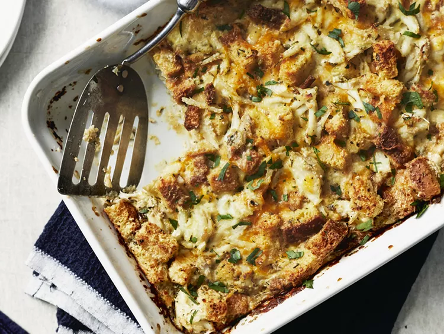

Crab Crunch
Home

Description
What a great recipe! Made it as written, with a couple minor changes: I only had a few croutons left, so I toasted a couple everything bagels and cut them up... plus I add a little Old Bay....it turned out great!!
Ingredients
- ¼ cup grated Parmesan cheese
- 1 tablespoon dried minced onion
- 8 ounces shredded Cheddar cheese
- 2 eggs, beaten
- salt and pepper to taste
Steps
- Preheat oven to 325 degrees F (165 degrees C). Lightly grease a medium baking dish.
- In large bowl, mix the eggs, milk, croutons, cheese, onion, and parsley. Stir in the crabmeat.
- Bake 1 hour in the preheated oven, or until a knife inserted into center of the casserole comes out clean. Serve immediately.